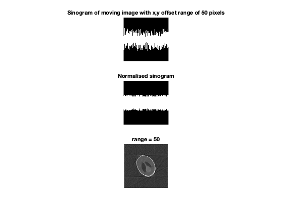

Contents
clc;clear;close all ; rng(0,'twister') h = 256 ; mN = 512 ; % Number of angles m = 4 ; N = mN/m ; % Final number of angles w=h; img = padarray(phantom (h),[100,100]) ; angles = linspace(0,360,mN) ; angles = angles(randperm(size(angles,2))) ;
Noiseless experiment for different epsilon
% figure; imshow(img,[]) ; title('Original image') ; range = [10,50,100]; for i=1:size(range,2) X1 = get_phantom_sino(img,angles,range(i)); X = move_centroid(X1); out = perform_graph_laplacian(X,angles,mN,N,m,120); figure; subplot(3,1,1) ; imshow(X1) ; title(['Sinogram of moving image with x,y offset range of ',num2str(range(i)),' pixels']) ; subplot(3,1,2) ; imshow(X) ; title('Normalised sinogram'); subplot(3,1,3); imshow(out,[]);title (['range = ',num2str(range(i))]) ; pause(0.5) ; end
Testing for different noise variances
If there is noise then the reconstruction will be bad irrespective of the range of motion of image Increasing variance causes reconstruction to be worser.
for noise_variance=[0.05,0.1,0.5] noisy_img = img + randn(size(img)) * noise_variance ; X1 = get_phantom_sino(noisy_img,angles,20); X = move_centroid(X1); out = perform_graph_laplacian(X,angles,mN,N,m,120); figure; subplot(2,2,3) ; imshow(noisy_img) ; subplot(2,2,1) ; imshow(X1) ; title(['Sinogram of moving image, variance = ',num2str(noise_variance)]) ; subplot(2,2,2) ; imshow(X) ; title('Normalised sinogram'); subplot(2,2,4); imshow(out,[]);title (['range = ',num2str(20)]) ; pause(1.5) ; end % %% Different approach for calculating centroid (not doing denoising on image)